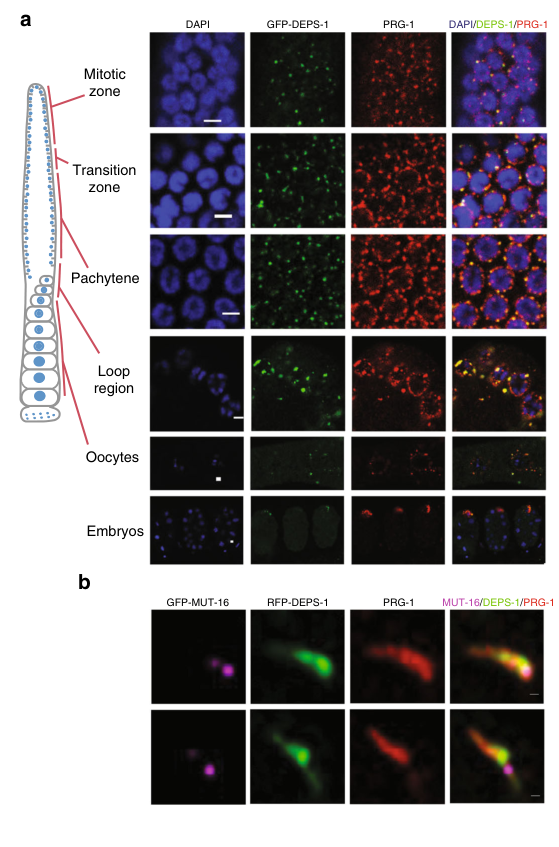

DEPS-1 (DEfective P granules and Sterile) is a scaffold protein essential for P granule assembly and integrity in C. elegans germ cells. It functions as a key component of the P-granule assembly pathway, required for proper localization of PGL-1 and accumulation of GLH-1. DEPS-1 is also essential for RNA interference (RNAi) in the germline, particularly for piRNA-mediated gene silencing, where it directly interacts with the Argonaute protein PRG-1 and promotes formation of secondary 22G-RNAs (endo-siRNAs). The protein plays roles in germ cell proliferation, fertility, and small RNA-directed transgenerational epigenetic inheritance.
| GO Term | Evidence | Action | Reason |
|---|---|---|---|
|
GO:0031047
regulatory ncRNA-mediated gene silencing
|
IEA
GO_REF:0000043 |
ACCEPT |
Summary: DEPS-1 is involved in multiple ncRNA-mediated gene silencing pathways. It is required for RNAi of germline-expressed genes and specifically for piRNA gene silencing (PMID:18234720, PMID:32843637). DEPS-1 promotes accumulation of RDE-4 (a dsRNA-binding protein required for RNAi) and positively regulates formation of secondary 22G-RNAs, which are endo-siRNAs.
Reason: This annotation correctly captures a core function of DEPS-1. The gene is required for RNA interference in the germline, promoting accumulation of RDE-4 and regulating endo-siRNA production (PMID:18234720). Additionally, DEPS-1 is essential for piRNA-mediated silencing through its interaction with PRG-1 (PMID:32843637). While GO:0031047 is a broad term, it accurately encompasses DEPS-1's role in both RNAi and piRNA pathways.
Supporting Evidence:
PMID:18234720
DEPS-1 is required for RNA interference (RNAi) of germline-expressed genes, possibly because DEPS-1 promotes the accumulation of RDE-4, a dsRNA-binding protein required for RNAi.
file:worm/deps-1/deps-1-deep-research-falcon.md
DEPS-1 is **not required for primary piRNA (21U) abundance**, but is required for **piRNA-dependent silencing** through effects on secondary siRNAs
file:worm/deps-1/deps-1-deep-research-falcon.md
DEPS-1 acts primarily **downstream of primary piRNA biogenesis**, promoting effective **piRNA-dependent silencing** through effects on **secondary 22G RNAs** and condensate organization
file:worm/deps-1/deps-1-deep-research-falcon.md
Spike et al. provide evidence that DEPS-1 promotes accumulation of **rde-4 mRNA and RDE-4 protein**, a dsRNA-binding factor essential for RNAi
|
|
GO:0048471
perinuclear region of cytoplasm
|
IEA
GO_REF:0000044 |
ACCEPT |
Summary: DEPS-1 localizes to the perinuclear region of cytoplasm where P granules are found. It co-localizes with PRG-1 at peri-nuclear P-granules in the proliferative zone, transition zone, at pachytene, in oocytes and in embryos (PMID:32843637).
Reason: This annotation is correct but less specific than GO:0043186 (P granule). P granules are located at the perinuclear region of the cytoplasm, so this annotation is technically correct. However, the IDA annotation to GO:0043186 provides more specific localization information. This IEA annotation can be retained as it accurately reflects the general subcellular localization derived from UniProt annotation.
Supporting Evidence:
PMID:18234720
We have identified a new P-granule-associated protein, DEPS-1
file:worm/deps-1/deps-1-deep-research-falcon.md
DEPS-1 and PRG-1 co-localize in **perinuclear granules** across multiple germline regions (proliferative zone to pachytene, oocytes, embryos)
|
|
GO:0043186
P granule
|
IDA
PMID:18234720 DEPS-1 promotes P-granule assembly and RNA interference in C... |
ACCEPT |
Summary: DEPS-1 localizes to P granules in germ cells at all stages of development. Direct experimental evidence from immunofluorescence studies demonstrates DEPS-1 localization to P granules (PMID:18234720). Additional studies confirm co-localization with PRG-1 at peri-nuclear P-granules and with PGL-1 in the pachytene region (PMID:32843637).
Reason: This is a well-supported IDA annotation based on direct localization studies. PMID:18234720 identified DEPS-1 as a P-granule-associated protein through immunofluorescence experiments. This is a core annotation for the gene, as P granule localization is essential for DEPS-1 function.
Supporting Evidence:
PMID:18234720
We have identified a new P-granule-associated protein, DEPS-1
file:worm/deps-1/deps-1-deep-research-falcon.md
DEPS-1::GFP is cytoplasmic and enriched on P granules, and anti-DEPS-1 staining of P granules is lost in deps-1 mutants
file:worm/deps-1/deps-1-deep-research-falcon.md
DEPS-1 condensates appear as **small protein clusters localized within protein-dense P granules**
|
|
GO:1903863
P granule assembly
|
IMP
PMID:18234720 DEPS-1 promotes P-granule assembly and RNA interference in C... |
NEW |
Summary: DEPS-1 is required for P granule assembly and integrity. Loss of DEPS-1 disrupts P-granule structure, prevents proper PGL-1 localization to P granules, and reduces GLH-1 accumulation (PMID:18234720). DEPS-1 acts as a scaffold protein in the P-granule assembly pathway.
Reason: This annotation should be added based on functional evidence from PMID:18234720. The publication demonstrates that DEPS-1 loss-of-function disrupts P granule structure and composition, indicating a direct role in P granule assembly. This is a core function of the gene.
Supporting Evidence:
PMID:18234720
DEPS-1 promotes P-granule assembly... the loss of which disrupts P-granule structure and function. DEPS-1 is required for the proper localization of PGL-1 to P granules, the accumulation of glh-1 mRNA and protein
file:worm/deps-1/deps-1-deep-research-falcon.md
Loss-of-function deps-1 mutations disrupt the localization of **PGL-1** (and PGL-3) to P granules, consistent with DEPS-1 acting **upstream of PGL proteins** in a P-granule formation pathway
file:worm/deps-1/deps-1-deep-research-falcon.md
DEPS-1 is a **constitutive P-granule component**
|
|
GO:0036093
germ cell proliferation
|
IMP
PMID:18234720 DEPS-1 promotes P-granule assembly and RNA interference in C... |
NEW |
Summary: deps-1 mutants show underproliferated germlines and fail to produce oocytes and sperm at restrictive temperatures, indicating a role in germ cell proliferation (PMID:18234720).
Reason: This annotation should be added as DEPS-1 is required for germ cell proliferation. The deps-1 mutant phenotype includes underproliferated germlines and sterility at elevated temperatures, demonstrating involvement in this biological process.
Supporting Evidence:
PMID:18234720
DEPS-1 is required for... germ cell proliferation and fertility at elevated temperatures.
file:worm/deps-1/deps-1-deep-research-falcon.md
DEPS-1 is required for normal germline development and fertility, with a **maternal-effect and temperature-sensitive sterility phenotype**
|
|
GO:0140693
molecular condensate scaffold activity
|
NAS | NEW |
Summary: DEPS-1 functions as a non-enzymatic germline-specific condensate scaffold/adaptor that organizes perinuclear germ granules and couples them to small-RNA effector pathways. It directly binds the PRG-1 PIWI domain via an N-terminal PIWI-binding site (PBS) motif, and PBS deletion disperses DEPS-1 into the cytoplasm and disrupts higher-order organization of PRG-1/DEPS-1 condensates, demonstrating its scaffolding role.
Reason: Core function term not present in existing_annotations. The falcon deep research synthesis supports a non-enzymatic condensate scaffold/adaptor role: DEPS-1 lacks canonical RNA-binding motifs and instead organizes condensate architecture and couples P granules to PIWI/mutator machinery.
Supporting Evidence:
file:worm/deps-1/deps-1-deep-research-falcon.md
the evidence supports annotating DEPS-1 as a **non-enzymatic, germline-specific condensate scaffold/adaptor** that organizes perinuclear germ granules and couples them to small-RNA effector pathways
file:worm/deps-1/deps-1-deep-research-falcon.md
Deletion of PBS disperses DEPS-1 into the cytoplasm and disrupts higher-order organization of PRG-1/DEPS-1 condensates
file:worm/deps-1/deps-1-deep-research-falcon.md
DEPS-1 binds the **PRG-1 PIWI domain**, mediated by an N-terminal **PIWI-binding site (PBS)** motif
|
The research report should be a detailed narrative explaining the function, biological processes, and localization of the gene product. Citations should be given for all claims.
You should prioritize authoritative reviews and primary scientific literature when conducting research. You can supplement
this with annotations you find in gene/protein databases, but these can be outdated or inaccurate.
We are specifically interested in the primary function of the gene - for enzymes, what reaction is catalyzed, and what is the substrate specificity? For transporters, what is the substrate? For structural proteins or adapters, what is the broader structural role? For signaling molecules, what is the role in the pathway.
We are interested in where in or outside the cell the gene product carries out its function.
We are also interested in the signaling or biochemical pathways in which the gene functions. We are less interested in broad pleiotropic effects, except where these elucidate the precise role.
Include evidence where possible. We are interested in both experimental evidence as well as inference from structure, evolution, or bioinformatic analysis. Precise studies should be prioritized over high-throughput, where available.
The target protein is DEPS-1 (defective P granules and sterile protein deps-1) from Caenorhabditis elegans, encoded by deps-1 / ORF Y65B4BL.2. Spike et al. mapped the phenotype to Y65B4BL.2, showed that RNAi of Y65B4BL.2 phenocopied deps-1 mutants, and detected allele-specific lesions in independent deps-1 alleles, verifying gene identity (spike2008deps1promotespgranule pages 4-5). DEPS-1 is described experimentally as a novel ~69 kDa protein with a serine-rich low-complexity C-terminus, lacking obvious canonical RNA-binding motifs, and conserved in related Caenorhabditis species (spike2008deps1promotespgranule pages 4-5).
P granules are germline-specific ribonucleoprotein condensates (a type of membraneless organelle) that localize to the cytoplasmic face of germline nuclei and concentrate factors involved in post-transcriptional regulation and small-RNA-based genome surveillance. DEPS-1 is a constitutive P-granule component: DEPS-1::GFP is cytoplasmic and enriched on P granules, and anti-DEPS-1 staining of P granules is lost in deps-1 mutants (while nuclear staining persists, consistent with antibody cross-reactivity) (spike2008deps1promotespgranule pages 4-5).
DEPS-1 connects P granules to multiple germline small-RNA pathways, most notably:
- piRNA (21U RNA) pathway: PRG-1 (a PIWI Argonaute) binds 21U RNAs to recognize targets.
- Secondary endo-siRNA (22G RNA) pathways: RdRP-generated 22G RNAs amplify silencing and are associated with mutator machinery.
Mechanistically, DEPS-1 acts primarily downstream of primary piRNA biogenesis, promoting effective piRNA-dependent silencing through effects on secondary 22G RNAs and condensate organization (suen2020deps1isrequired pages 8-9).
Loss-of-function deps-1 mutations disrupt the localization of PGL-1 (and PGL-3) to P granules, consistent with DEPS-1 acting upstream of PGL proteins in a P-granule formation pathway (spike2008deps1promotespgranule pages 4-5). This places DEPS-1 among the structural/organizational factors needed to assemble normal P-granule protein composition.
DEPS-1 is required for normal germline development and fertility, with a maternal-effect and temperature-sensitive sterility phenotype:
- In deps-1(bn121) M−Z− animals raised at 24.5°C, 93% are sterile (spike2008deps1promotespgranule pages 4-5).
- Germlines frequently lack gametes and have reduced germ cell numbers: 56% of germline arms had <200 germ nuclei (n=48), and 63% lacked both sperm and oocytes (spike2008deps1promotespgranule pages 4-5).
- Mean germ cells per gonad arm at 24.5°C: 254 ± 236 (n=16, range 10–762) vs wild-type 586 ± 45 (n=6, range 526–651) (spike2008deps1promotespgranule pages 4-5).
These data support DEPS-1 as a core germline integrity factor, likely through maintaining P-granule-dependent RNA regulation.
Spike et al. provide evidence that DEPS-1 promotes accumulation of rde-4 mRNA and RDE-4 protein, a dsRNA-binding factor essential for RNAi:
- rde-4 mRNA reduced 7–10-fold in deps-1 gravid adults (M−Z−) (spike2008deps1promotespgranule pages 7-8).
- RDE-4 protein reduced by ~10-fold in deps-1 M−Z− adults (spike2008deps1promotespgranule pages 7-8).
Consistent with this, deps-1 mutants are resistant to germline RNAi against maternally expressed genes such as pos-1, skn-1, pie-1, while RNAi against several zygotically expressed targets was not obviously altered (spike2008deps1promotespgranule pages 7-8). This supports a model in which DEPS-1 influences RNAi competence at least partly indirectly via maintaining RDE-4 levels.
Suen et al. show DEPS-1 physically couples the P granule scaffold to PIWI:
- DEPS-1 binds the PRG-1 PIWI domain, mediated by an N-terminal PIWI-binding site (PBS) motif (suen2020deps1isrequired pages 4-5).
- Microscale thermophoresis (MST) binding affinities:
- Full-length PRG-1 vs full-length DEPS-1: Kdapp = 855 ± 133 nM (suen2020deps1isrequired pages 3-4, suen2020deps1isrequired media a9234a31).
- PBS peptide vs PRG-1 PIWI domain: Kdapp = 1.9 µM ± 98 nM (suen2020deps1isrequired pages 3-4, suen2020deps1isrequired media a9234a31).
Deletion of PBS disperses DEPS-1 into the cytoplasm and disrupts higher-order organization of PRG-1/DEPS-1 condensates (suen2020deps1isrequired pages 3-4).
DEPS-1 contributes to condensate morphology and links piRNA recognition to downstream amplification:
- Removing PBS compacts PRG-1 condensates; PRG-1/DEPS-1 normally form intertwining clusters to build elongated perinuclear condensates (suen2020deps1isrequired pages 3-4).
- deps-1 loss or PBS mutation results in fewer, brighter MUT-16 foci and altered PRG-1 condensate properties, consistent with disruption of the interface between P granules and mutator foci (suen2020deps1isrequired pages 9-10).
DEPS-1 is not required for primary piRNA (21U) abundance, but is required for piRNA-dependent silencing through effects on secondary siRNAs:
- In deps-1 mutants, 21U levels remain similar to wild type, while prg-1 mutants show strong loss of 21Us (one-sided t-test p < 10−20, n=2) (suen2020deps1isrequired pages 8-9).
- deps-1 affects secondary 22G siRNAs across pathways, with a strong effect on WAGO-class targets:
- 300/425 WAGO targets show >2-fold reduction in 22Gs (hypergeometric p < 10−139) (suen2020deps1isrequired pages 8-9).
- Limited effect on ERGO-1 targets (7/23, p < 0.2) (suen2020deps1isrequired pages 8-9).
- For CSR-1 class, overlap with strong reductions is limited (e.g., 4/162 CSR-1 targets among genes with >2-fold 22G reduction; hypergeometric p < 10−13) (suen2020deps1isrequired pages 8-9).
- A global statistic reported: 8986/11,088 germline-expressed genes are endo-siRNA targets; 55/63 curated P-granule factors are endo-siRNA targets; and 10/63 P-granule factors show differential 22Gs in deps-1 mutant (suen2020deps1isrequired pages 9-10).
- Correlation between small RNA depletion and mRNA increase: when small RNAs decrease, target mRNAs tend to be upregulated (R² = 0.58; p < 0.01) (suen2020deps1isrequired pages 8-9).
Functionally, deps-1 mutants and PBS-deletion mutants desilence a piRNA sensor transgene, demonstrating a direct impact on piRNA-mediated repression in vivo (suen2020deps1isrequired pages 3-4, suen2020deps1isrequired media a9234a31).
A major recent technical advance directly involving DEPS-1 is the application of pan-protein staining with ~3× expansion microscopy (EExM) to resolve germ-granule subdomains:
- DEPS-1 condensates appear as small protein clusters localized within protein-dense P granules (suen2023expansionmicroscopyreveals pages 11-15).
- Quantitative granule counts per nucleus: 2.5 ± 0.8 (GFP-DEPS-1-positive granules) vs 2.8 ± 1.3 (pan-stain-positive granules), based on 9 nuclei from 3 experiments (suen2023expansionmicroscopyreveals pages 11-15).
- deps-1(bn124) mutants show fewer perinuclear protein-dense structures and can show PRG-1–containing granules dissociated from the nuclear membrane; P granule size is reduced in deps-1 and mut-16 mutants compared with wild type with reported significance (p < 0.001; p < 0.0001*) (suen2023expansionmicroscopyreveals pages 11-15).
This work reinforces the concept that germ granules are not homogeneous droplets but contain spatially organized subdomains, and provides an implementable quantitative pipeline for granule morphology analysis.
A 2024 bioRxiv preprint was retrieved that mentions DEPS-1 in passing in the snippet returned by search; however, in the accessible extracted sections here, no interpretable DEPS-1-specific experimental evidence was available for extraction, so it is not used to support new DEPS-1 claims in this report.
Research groups actively use deps-1 and DEPS-1-based tools to interrogate germline condensates and small-RNA silencing:
1. piRNA sensor transgenes (H2B reporter with a piRNA target site) to assay defects in piRNA silencing; deps-1 null and ΔPBS mutants desilence this sensor (suen2020deps1isrequired pages 3-4, suen2020deps1isrequired media a9234a31).
2. CRISPR/Cas9 motif editing of DEPS-1 (PBS deletion/replacement) to separate “presence in P granules” from “PIWI binding,” enabling causal tests of condensate organization vs silencing output (suen2020deps1isrequired pages 4-5).
3. Quantitative microscopy pipelines (e.g., expansion microscopy with pan-protein staining) for nanoscale mapping of DEPS-1 within perinuclear protein-dense structures and for measuring mutant effects on granule size and nuclear-envelope association (suen2023expansionmicroscopyreveals pages 11-15).
4. Germline RNAi competence assays using feeding RNAi against maternal genes, leveraging the RDE-4 dependency and deps-1-specific RNAi resistance phenotypes (spike2008deps1promotespgranule pages 7-8).
Taken together, the evidence supports annotating DEPS-1 as a non-enzymatic, germline-specific condensate scaffold/adaptor that organizes perinuclear germ granules and couples them to small-RNA effector pathways.
Mechanistically, DEPS-1 appears to provide two separable but linked functions:
1. P-granule assembly/maintenance via upstream effects on PGL protein localization and on accumulation of other P-granule factors (e.g., GLH-1) (spike2008deps1promotespgranule pages 4-5).
2. piRNA pathway coupling via a direct DEPS-1–PRG-1 interaction (PBS–PIWI binding) that supports proper PRG-1 condensate ultrastructure and promotes downstream 22G siRNA amplification required for effective silencing (suen2020deps1isrequired pages 3-4, suen2020deps1isrequired pages 8-9).
A consistent theme is that DEPS-1 loss perturbs both granule composition/architecture and small-RNA output, implying a functional relationship between condensate ultrastructure and biochemical throughput of gene-silencing reactions.
| Finding | Function/process | Localization | Interactions/partners | Assays/evidence type | Quantitative stats | Primary source (date, URL) |
|---|---|---|---|---|---|---|
| Gene identity and core granule role | DEPS-1 is the product of deps-1 / Y65B4BL.2, a constitutive P-granule-associated protein required for proper PGL-1/PGL-3 localization and thus P-granule assembly | Cytoplasmic in germ cells and concentrated on P granules in adult germ line and late embryos; antibody P-granule staining lost in deps-1 mutants | Genetic/functional relationship upstream of PGL-1/PGL-3; also influences GLH-1 accumulation | Positional cloning/rescue, RNAi phenocopy, anti-DEPS-1 immunostaining, DEPS-1::GFP imaging, western blot | DEPS-1 protein ~69 kDa; orthologs show 45–51% identity in related Caenorhabditis spp.; 4 mutant alleles predicted strong LOF/null | Spike et al., “DEPS-1 promotes P-granule assembly and RNA interference in C. elegans germ cells” (Mar 2008), Development. https://doi.org/10.1242/dev.015552 |
| Fertility and germ-cell proliferation phenotype | DEPS-1 is required for fertility, gametogenesis, and normal germ-cell proliferation | Germ line / gonad arms | Linked functionally to constitutive P-granule machinery | Mutant phenotype scoring, germ-cell counting, temperature-shift analysis | In deps-1(bn121) M−Z− at 24.5°C, 93% sterile; 56% of germline arms had <200 germ nuclei; 63% lacked both sperm and oocytes; mean germ cells/gonad arm 254 ± 236 (n=16, range 10–762) vs wild type 586 ± 45 (n=6, range 526–651) | Spike et al., 2008 (Mar 2008), Development. https://doi.org/10.1242/dev.015552 |
| Germline RNAi support via RDE-4 | DEPS-1 promotes germline RNA interference, likely in part by supporting rde-4 mRNA/protein accumulation; RNAi defects are selective for germline/maternal targets | Germline P granules; post-transcriptional role inferred from cytoplasmic granule localization | Functional link to RDE-4; overlap with RDE-3/MUT-2-repressed gene sets | qRT-PCR, western blot, feeding RNAi assays, microarray comparison | rde-4 mRNA reduced 7–10-fold and RDE-4 protein ~10-fold lower in deps-1 M−Z− adults; strong resistance to pos-1/skn-1/pie-1 RNAi; overlap of upregulated genes with rde-3 dataset: 9/32 (~30%), P < 2.2 × 10⁻⁹; selected genes upregulated ~4- to 326-fold | Spike et al., 2008 (Mar 2008), Development. https://doi.org/10.1242/dev.015552 |
| Direct PRG-1 binding and piRNA-silencing role | DEPS-1 directly couples P granules to the piRNA pathway; required for piRNA-dependent silencing but not primary piRNA biogenesis | Perinuclear granules across adult germline regions; DEPS-1 and PRG-1 form intertwined elongated condensates | Direct interaction with PRG-1/PIWI via N-terminal PBS (PIWI-binding site) motif | PRG-1 IP-MS, colocalization imaging, MST biophysics, CRISPR PBS deletion, piRNA sensor assay | PRG-1 IP-MS recovered 133 proteins, DEPS-1 among top 10 interactors; MST Kdapp = 855 ± 133 nM (full-length PRG-1–DEPS-1), 349 ± 45 nM (PRG-1 PIWI–full-length DEPS-1), 1.9 µM ± 98 nM (PBS peptide–PRG-1 PIWI); deps-1 null and ΔPBS mutants desilence piRNA sensor | Suen et al., “DEPS-1 is required for piRNA-dependent silencing and PIWI condensate organisation in Caenorhabditis elegans” (Aug 2020), Nature Communications. https://doi.org/10.1038/s41467-020-18089-1 |
| Condensate ultrastructure and mutator-foci coupling | DEPS-1 organizes PRG-1 condensate morphology and helps maintain spatial coupling between P granules and mutator foci for downstream silencing | Perinuclear P granules; loss of PBS causes DEPS-1 cytoplasmic diffusion and compacted PRG-1 condensates | PRG-1, MUT-16, additional interactor EDG-1 | Live imaging, high-resolution microscopy, condensate morphometry, Y2H for EDG-1 | ΔPBS protein expressed at ~70% of WT; PRG-1 condensates become more compacted in deps-1 null/ΔPBS; PRG-1 morphometry sampled 20 condensates from 2 germlines (n=40 per genotype); deps-1 mutants show fewer, brighter MUT-16 foci; edg-1 knockdown specifically alters DEPS-1 condensates | Suen et al., 2020 (Aug 2020), Nature Communications. https://doi.org/10.1038/s41467-020-18089-1 |
| Secondary endo-siRNA / 22G homeostasis | DEPS-1 acts downstream of PRG-1 to promote secondary 22G endo-siRNAs from piRNA targets and affects multiple germline small-RNA pathways | Functional bridge between P granules and mutator foci | PRG-1-associated piRNA pathway; effects on WAGO, limited on ERGO-1, modest/complex on CSR-1 classes | Small-RNA sequencing, enrichment/overlap analyses, reporter silencing | 21U/piRNA levels remain similar to WT in deps-1 mutants, whereas prg-1 loses 21Us (one-sided t-test P < 10⁻²⁰, n=2); 300/425 WAGO targets show >2-fold 22G reduction (P < 10⁻¹³⁹); 7/23 ERGO-1 targets affected (P < 0.2); overlap with reduced CSR-1-target 22Gs 4/162 genes vs 447/2012 genes with >2-fold reduction (P < 10⁻¹³); sequencing often n=3 biological replicates | Suen et al., 2020 (Aug 2020), Nature Communications. https://doi.org/10.1038/s41467-020-18089-1 |
| Small RNAs target granule genes and explain transcript effects | DEPS-1 perturbation changes endo-siRNAs targeting granule factors and correlates with mRNA changes | Germline perinuclear granule system | Endo-siRNA targeting of P-granule factors broadly | Integrative analysis of small RNA and prior expression data | 8986/11,088 germline-expressed genes are endo-siRNA targets; 55/63 curated P-granule factors are endo-siRNA targets; 10/63 P-granule factors show differential 22Gs in deps-1 mutant; decrease in small RNAs correlates with mRNA increase (R² = 0.58, P < 0.01) | Suen et al., 2020 (Aug 2020), Nature Communications. https://doi.org/10.1038/s41467-020-18089-1 |
| Recent nanoscale localization update | 2023 expansion microscopy refines DEPS-1 placement within protein-dense P granules and shows P granule malformation in deps-1 mutants | DEPS-1 appears as small clusters localized within P granules; deps-1 mutants show reduced and sometimes nuclear-membrane-dissociated perinuclear granules | Spatial comparison with PRG-1, MUT-16, ZNFX-1 subdomains | Expansion microscopy (EExM), pan-protein staining, anti-DEPS-1/PRG-1 imaging, granule-size normalization | Average granules per nucleus: 2.5 ± 0.8 by GFP-DEPS-1 and 2.8 ± 1.3 by pan-stain (9 nuclei, 3 experiments); average expansion factor ~3× from 31 expanded nuclei / 6 experiments vs 47 non-expanded nuclei / 3 experiments; P granules smaller in deps-1(bn124) and mut-16(pk710), with significance P < 0.001 and P < 0.0001 depending on comparison | Suen et al., “Expansion microscopy reveals subdomains in C. elegans germ granules” (May 2023 preprint), bioRxiv. https://doi.org/10.1101/2022.05.29.493872 |
Table: This table summarizes core experimental findings for C. elegans DEPS-1, including function, localization, molecular partners, assay types, and quantitative results from the main primary studies. It is designed as a compact evidence map for functional annotation of UniProt Q9N303.
References
(spike2008deps1promotespgranule pages 4-5): Caroline A. Spike, Jason Bader, Valerie Reinke, and Susan Strome. Deps-1 promotes p-granule assembly and rna interference in c. elegans germ cells. Development, 135:983-993, Mar 2008. URL: https://doi.org/10.1242/dev.015552, doi:10.1242/dev.015552. This article has 98 citations and is from a domain leading peer-reviewed journal.
(suen2020deps1isrequired pages 8-9): Kin Man Suen, Fabian Braukmann, Richard Butler, Dalila Bensaddek, Alper Akay, Chi-Chuan Lin, Dovilė Milonaitytė, Neel Doshi, Alexandra Sapetschnig, Angus Lamond, John Edward Ladbury, and Eric Alexander Miska. Deps-1 is required for pirna-dependent silencing and piwi condensate organisation in caenorhabditis elegans. Text, Aug 2020. URL: https://doi.org/10.17863/cam.74696, doi:10.17863/cam.74696. This article has 28 citations and is from a peer-reviewed journal.
(spike2008deps1promotespgranule pages 7-8): Caroline A. Spike, Jason Bader, Valerie Reinke, and Susan Strome. Deps-1 promotes p-granule assembly and rna interference in c. elegans germ cells. Development, 135:983-993, Mar 2008. URL: https://doi.org/10.1242/dev.015552, doi:10.1242/dev.015552. This article has 98 citations and is from a domain leading peer-reviewed journal.
(suen2020deps1isrequired pages 3-4): Kin Man Suen, Fabian Braukmann, Richard Butler, Dalila Bensaddek, Alper Akay, Chi-Chuan Lin, Dovilė Milonaitytė, Neel Doshi, Alexandra Sapetschnig, Angus Lamond, John Edward Ladbury, and Eric Alexander Miska. Deps-1 is required for pirna-dependent silencing and piwi condensate organisation in caenorhabditis elegans. Text, Aug 2020. URL: https://doi.org/10.17863/cam.74696, doi:10.17863/cam.74696. This article has 28 citations and is from a peer-reviewed journal.
(suen2020deps1isrequired media a9234a31): Kin Man Suen, Fabian Braukmann, Richard Butler, Dalila Bensaddek, Alper Akay, Chi-Chuan Lin, Dovilė Milonaitytė, Neel Doshi, Alexandra Sapetschnig, Angus Lamond, John Edward Ladbury, and Eric Alexander Miska. Deps-1 is required for pirna-dependent silencing and piwi condensate organisation in caenorhabditis elegans. Text, Aug 2020. URL: https://doi.org/10.17863/cam.74696, doi:10.17863/cam.74696. This article has 28 citations and is from a peer-reviewed journal.
(suen2020deps1isrequired pages 4-5): Kin Man Suen, Fabian Braukmann, Richard Butler, Dalila Bensaddek, Alper Akay, Chi-Chuan Lin, Dovilė Milonaitytė, Neel Doshi, Alexandra Sapetschnig, Angus Lamond, John Edward Ladbury, and Eric Alexander Miska. Deps-1 is required for pirna-dependent silencing and piwi condensate organisation in caenorhabditis elegans. Text, Aug 2020. URL: https://doi.org/10.17863/cam.74696, doi:10.17863/cam.74696. This article has 28 citations and is from a peer-reviewed journal.
(suen2020deps1isrequired pages 9-10): Kin Man Suen, Fabian Braukmann, Richard Butler, Dalila Bensaddek, Alper Akay, Chi-Chuan Lin, Dovilė Milonaitytė, Neel Doshi, Alexandra Sapetschnig, Angus Lamond, John Edward Ladbury, and Eric Alexander Miska. Deps-1 is required for pirna-dependent silencing and piwi condensate organisation in caenorhabditis elegans. Text, Aug 2020. URL: https://doi.org/10.17863/cam.74696, doi:10.17863/cam.74696. This article has 28 citations and is from a peer-reviewed journal.
(suen2023expansionmicroscopyreveals pages 11-15): Kin M. Suen, Thomas M. D. Sheard, Chi-Chuan Lin, Dovile Milonaityte, Izzy Jayasinghe, and John E. Ladbury. Expansion microscopy reveals subdomains in c. elegans germ granules. bioRxiv, May 2023. URL: https://doi.org/10.1101/2022.05.29.493872, doi:10.1101/2022.05.29.493872. This article has 6 citations.

id: Q9N303
gene_symbol: deps-1
product_type: PROTEIN
status: COMPLETE
taxon:
id: NCBITaxon:6239
label: Caenorhabditis elegans
description: 'DEPS-1 (DEfective P granules and Sterile) is a scaffold protein essential
for P granule assembly and integrity in C. elegans germ cells. It functions as a
key component of the P-granule assembly pathway, required for proper localization
of PGL-1 and accumulation of GLH-1. DEPS-1 is also essential for RNA interference
(RNAi) in the germline, particularly for piRNA-mediated gene silencing, where it
directly interacts with the Argonaute protein PRG-1 and promotes formation of secondary
22G-RNAs (endo-siRNAs). The protein plays roles in germ cell proliferation, fertility,
and small RNA-directed transgenerational epigenetic inheritance.
'
existing_annotations:
- term:
id: GO:0031047
label: regulatory ncRNA-mediated gene silencing
evidence_type: IEA
original_reference_id: GO_REF:0000043
review:
summary: 'DEPS-1 is involved in multiple ncRNA-mediated gene silencing pathways.
It is required for RNAi of germline-expressed genes and specifically for piRNA
gene silencing (PMID:18234720, PMID:32843637). DEPS-1 promotes accumulation
of RDE-4 (a dsRNA-binding protein required for RNAi) and positively regulates
formation of secondary 22G-RNAs, which are endo-siRNAs.
'
action: ACCEPT
reason: 'This annotation correctly captures a core function of DEPS-1. The gene
is required for RNA interference in the germline, promoting accumulation of
RDE-4 and regulating endo-siRNA production (PMID:18234720). Additionally,
DEPS-1 is essential for piRNA-mediated silencing through its interaction with
PRG-1 (PMID:32843637). While GO:0031047 is a broad term, it accurately encompasses
DEPS-1''s role in both RNAi and piRNA pathways.
'
additional_reference_ids:
- file:worm/deps-1/deps-1-deep-research-falcon.md
supported_by:
- reference_id: PMID:18234720
supporting_text: DEPS-1 is required for RNA interference (RNAi) of
germline-expressed genes, possibly because DEPS-1 promotes the
accumulation of RDE-4, a dsRNA-binding protein required for RNAi.
- reference_id: file:worm/deps-1/deps-1-deep-research-falcon.md
supporting_text: >-
DEPS-1 is **not required for primary piRNA (21U) abundance**, but is
required for **piRNA-dependent silencing** through effects on secondary
siRNAs
- reference_id: file:worm/deps-1/deps-1-deep-research-falcon.md
supporting_text: >-
DEPS-1 acts primarily **downstream of primary piRNA biogenesis**,
promoting effective **piRNA-dependent silencing** through effects on
**secondary 22G RNAs** and condensate organization
- reference_id: file:worm/deps-1/deps-1-deep-research-falcon.md
supporting_text: >-
Spike et al. provide evidence that DEPS-1 promotes accumulation of
**rde-4 mRNA and RDE-4 protein**, a dsRNA-binding factor essential for
RNAi
- term:
id: GO:0048471
label: perinuclear region of cytoplasm
evidence_type: IEA
original_reference_id: GO_REF:0000044
review:
summary: 'DEPS-1 localizes to the perinuclear region of cytoplasm where P granules
are found. It co-localizes with PRG-1 at peri-nuclear P-granules in the proliferative
zone, transition zone, at pachytene, in oocytes and in embryos (PMID:32843637).
'
action: ACCEPT
reason: 'This annotation is correct but less specific than GO:0043186 (P granule).
P granules are located at the perinuclear region of the cytoplasm, so this
annotation is technically correct. However, the IDA annotation to GO:0043186
provides more specific localization information. This IEA annotation can be
retained as it accurately reflects the general subcellular localization derived
from UniProt annotation.
'
additional_reference_ids:
- file:worm/deps-1/deps-1-deep-research-falcon.md
supported_by:
- reference_id: PMID:18234720
supporting_text: We have identified a new P-granule-associated
protein, DEPS-1
- reference_id: file:worm/deps-1/deps-1-deep-research-falcon.md
supporting_text: >-
DEPS-1 and PRG-1 co-localize in **perinuclear granules** across
multiple germline regions (proliferative zone to pachytene, oocytes,
embryos)
- term:
id: GO:0043186
label: P granule
evidence_type: IDA
original_reference_id: PMID:18234720
review:
summary: 'DEPS-1 localizes to P granules in germ cells at all stages of development.
Direct experimental evidence from immunofluorescence studies demonstrates
DEPS-1 localization to P granules (PMID:18234720). Additional studies confirm
co-localization with PRG-1 at peri-nuclear P-granules and with PGL-1 in the
pachytene region (PMID:32843637).
'
action: ACCEPT
reason: 'This is a well-supported IDA annotation based on direct localization
studies. PMID:18234720 identified DEPS-1 as a P-granule-associated protein
through immunofluorescence experiments. This is a core annotation for the
gene, as P granule localization is essential for DEPS-1 function.
'
additional_reference_ids:
- file:worm/deps-1/deps-1-deep-research-falcon.md
supported_by:
- reference_id: PMID:18234720
supporting_text: We have identified a new P-granule-associated
protein, DEPS-1
- reference_id: file:worm/deps-1/deps-1-deep-research-falcon.md
supporting_text: >-
DEPS-1::GFP is cytoplasmic and enriched on P granules, and
anti-DEPS-1 staining of P granules is lost in deps-1 mutants
- reference_id: file:worm/deps-1/deps-1-deep-research-falcon.md
supporting_text: >-
DEPS-1 condensates appear as **small protein clusters localized
within protein-dense P granules**
- term:
id: GO:1903863
label: P granule assembly
evidence_type: IMP
original_reference_id: PMID:18234720
review:
summary: 'DEPS-1 is required for P granule assembly and integrity. Loss of DEPS-1
disrupts P-granule structure, prevents proper PGL-1 localization to P granules,
and reduces GLH-1 accumulation (PMID:18234720). DEPS-1 acts as a scaffold
protein in the P-granule assembly pathway.
'
action: NEW
reason: 'This annotation should be added based on functional evidence from PMID:18234720.
The publication demonstrates that DEPS-1 loss-of-function disrupts P granule
structure and composition, indicating a direct role in P granule assembly.
This is a core function of the gene.
'
additional_reference_ids:
- file:worm/deps-1/deps-1-deep-research-falcon.md
supported_by:
- reference_id: PMID:18234720
supporting_text: DEPS-1 promotes P-granule assembly... the loss of
which disrupts P-granule structure and function. DEPS-1 is required
for the proper localization of PGL-1 to P granules, the accumulation
of glh-1 mRNA and protein
- reference_id: file:worm/deps-1/deps-1-deep-research-falcon.md
supporting_text: >-
Loss-of-function deps-1 mutations disrupt the localization of
**PGL-1** (and PGL-3) to P granules, consistent with DEPS-1 acting
**upstream of PGL proteins** in a P-granule formation pathway
- reference_id: file:worm/deps-1/deps-1-deep-research-falcon.md
supporting_text: >-
DEPS-1 is a **constitutive P-granule component**
- term:
id: GO:0036093
label: germ cell proliferation
evidence_type: IMP
original_reference_id: PMID:18234720
review:
summary: 'deps-1 mutants show underproliferated germlines and fail to produce
oocytes and sperm at restrictive temperatures, indicating a role in germ cell
proliferation (PMID:18234720).
'
action: NEW
reason: 'This annotation should be added as DEPS-1 is required for germ cell
proliferation. The deps-1 mutant phenotype includes underproliferated germlines
and sterility at elevated temperatures, demonstrating involvement in this
biological process.
'
additional_reference_ids:
- file:worm/deps-1/deps-1-deep-research-falcon.md
supported_by:
- reference_id: PMID:18234720
supporting_text: DEPS-1 is required for... germ cell proliferation and
fertility at elevated temperatures.
- reference_id: file:worm/deps-1/deps-1-deep-research-falcon.md
supporting_text: >-
DEPS-1 is required for normal germline development and fertility,
with a **maternal-effect and temperature-sensitive sterility
phenotype**
- term:
id: GO:0140693
label: molecular condensate scaffold activity
evidence_type: NAS
review:
summary: >-
DEPS-1 functions as a non-enzymatic germline-specific condensate
scaffold/adaptor that organizes perinuclear germ granules and couples
them to small-RNA effector pathways. It directly binds the PRG-1 PIWI
domain via an N-terminal PIWI-binding site (PBS) motif, and PBS deletion
disperses DEPS-1 into the cytoplasm and disrupts higher-order
organization of PRG-1/DEPS-1 condensates, demonstrating its scaffolding
role.
action: NEW
reason: >-
Core function term not present in existing_annotations. The falcon deep
research synthesis supports a non-enzymatic condensate scaffold/adaptor
role: DEPS-1 lacks canonical RNA-binding motifs and instead organizes
condensate architecture and couples P granules to PIWI/mutator
machinery.
additional_reference_ids:
- file:worm/deps-1/deps-1-deep-research-falcon.md
supported_by:
- reference_id: file:worm/deps-1/deps-1-deep-research-falcon.md
supporting_text: >-
the evidence supports annotating DEPS-1 as a **non-enzymatic,
germline-specific condensate scaffold/adaptor** that organizes
perinuclear germ granules and couples them to small-RNA effector
pathways
- reference_id: file:worm/deps-1/deps-1-deep-research-falcon.md
supporting_text: >-
Deletion of PBS disperses DEPS-1 into the cytoplasm and disrupts
higher-order organization of PRG-1/DEPS-1 condensates
- reference_id: file:worm/deps-1/deps-1-deep-research-falcon.md
supporting_text: >-
DEPS-1 binds the **PRG-1 PIWI domain**, mediated by an N-terminal
**PIWI-binding site (PBS)** motif
references:
- id: GO_REF:0000043
title: Gene Ontology annotation based on UniProtKB/Swiss-Prot keyword
mapping
findings: []
- id: GO_REF:0000044
title: Gene Ontology annotation based on UniProtKB/Swiss-Prot Subcellular
Location vocabulary mapping, accompanied by conservative changes to GO
terms applied by UniProt
findings: []
- id: PMID:18234720
title: DEPS-1 promotes P-granule assembly and RNA interference in C. elegans
germ cells.
findings:
- statement: DEPS-1 is a novel P-granule-associated protein required for P
granule structure and function
supporting_text: We have identified a new P-granule-associated protein,
DEPS-1, the loss of which disrupts P-granule structure and function.
- statement: DEPS-1 is required for proper localization of PGL-1 to P
granules
supporting_text: DEPS-1 is required for the proper localization of PGL-1
to P granules
- statement: DEPS-1 promotes accumulation of glh-1 mRNA and protein
supporting_text: DEPS-1 is required for... the accumulation of glh-1
mRNA and protein
- statement: DEPS-1 is required for germ cell proliferation and fertility
at elevated temperatures
supporting_text: DEPS-1 is required for... germ cell proliferation and
fertility at elevated temperatures
- statement: DEPS-1 is required for RNAi of germline-expressed genes
supporting_text: DEPS-1 is required for RNA interference (RNAi) of
germline-expressed genes
- statement: DEPS-1 promotes accumulation of RDE-4, a dsRNA-binding
protein required for RNAi
supporting_text: DEPS-1 promotes the accumulation of RDE-4, a
dsRNA-binding protein required for RNAi
- id: PMID:32843637
title: DEPS-1 is required for piRNA-dependent silencing and PIWI condensate
organisation in Caenorhabditis elegans.
findings:
- statement: DEPS-1 directly interacts with PRG-1 (Piwi Argonaute) via its
N-terminus
- statement: DEPS-1 is required for piRNA-mediated gene silencing
- statement: DEPS-1 positively regulates formation of secondary 22G-RNAs
(endo-siRNAs)
- statement: DEPS-1 co-localizes with PRG-1 at peri-nuclear P-granules
- id: PMID:27015309
title: A Tunable Mechanism Determines the Duration of the Transgenerational
Small RNA Inheritance in C. elegans.
findings:
- statement: DEPS-1 plays a role in small RNA-directed transgenerational
epigenetic inheritance
- id: PMID:29769721
title: Spatiotemporal regulation of liquid-like condensates in epigenetic
inheritance.
findings:
- statement: deps-1 mutants have smaller Z granules (liquid-like
condensates)
- statement: DEPS-1 is required for proper binding of ZNFX-1 to RNA
- id: file:worm/deps-1/deps-1-deep-research-falcon.md
title: Falcon deep research report on C. elegans deps-1 (Q9N303)
findings:
- statement: >-
DEPS-1 is a constitutive P-granule component that is cytoplasmic and
enriched on P granules; antibody P-granule staining is lost in deps-1
mutants.
supporting_text: >-
DEPS-1 is a **constitutive P-granule component**: DEPS-1::GFP is
cytoplasmic and enriched on P granules, and anti-DEPS-1 staining of P
granules is lost in deps-1 mutants
- statement: >-
DEPS-1 acts upstream of PGL-1/PGL-3 in P-granule assembly; loss of
DEPS-1 disrupts PGL localization to P granules.
supporting_text: >-
Loss-of-function deps-1 mutations disrupt the localization of
**PGL-1** (and PGL-3) to P granules, consistent with DEPS-1 acting
**upstream of PGL proteins** in a P-granule formation pathway
- statement: >-
DEPS-1 directly binds the PRG-1 PIWI domain via an N-terminal
PIWI-binding site (PBS) motif; deletion of the PBS disperses DEPS-1
into the cytoplasm and disrupts higher-order PRG-1/DEPS-1 condensate
organization.
supporting_text: >-
DEPS-1 binds the **PRG-1 PIWI domain**, mediated by an N-terminal
**PIWI-binding site (PBS)** motif (suen2020deps1isrequired pages
4-5).
- statement: >-
Microscale thermophoresis measured the DEPS-1/PRG-1 interaction with
full-length affinity Kdapp = 855 +/- 133 nM and PBS-peptide affinity
Kdapp = 1.9 uM +/- 98 nM.
supporting_text: >-
Full-length PRG-1 vs full-length DEPS-1: **Kdapp = 855 ± 133 nM**
- statement: >-
DEPS-1 is not required for primary piRNA (21U) abundance but is
required for piRNA-dependent silencing, acting downstream of PRG-1 to
promote secondary 22G endo-siRNAs (notably for WAGO-class targets).
supporting_text: >-
DEPS-1 is **not required for primary piRNA (21U) abundance**, but is
required for **piRNA-dependent silencing** through effects on secondary
siRNAs
- statement: >-
DEPS-1 promotes accumulation of rde-4 mRNA and RDE-4 protein, linking
DEPS-1 to germline RNAi competence.
supporting_text: >-
Spike et al. provide evidence that DEPS-1 promotes accumulation of
**rde-4 mRNA and RDE-4 protein**, a dsRNA-binding factor essential for
RNAi
- statement: >-
DEPS-1 organizes PRG-1 condensate morphology and maintains coupling
between P granules and mutator foci; loss of DEPS-1 or the PBS yields
fewer, brighter MUT-16 foci.
supporting_text: >-
deps-1 loss or PBS mutation results in **fewer, brighter MUT-16 foci**
- statement: >-
Synthesis: DEPS-1 is best annotated as a non-enzymatic,
germline-specific condensate scaffold/adaptor that organizes
perinuclear germ granules and couples them to small-RNA effector
pathways.
supporting_text: >-
the evidence supports annotating DEPS-1 as a **non-enzymatic,
germline-specific condensate scaffold/adaptor** that organizes
perinuclear germ granules and couples them to small-RNA effector
pathways
core_functions:
- molecular_function:
id: GO:0140693
label: molecular condensate scaffold activity
description: DEPS-1 functions as a scaffold protein for P granule assembly,
organizing the liquid-like condensate structure of P granules in C.
elegans germ cells. It is required for proper localization of PGL-1 and
accumulation of GLH-1, acting as a core structural component of these
ribonucleoprotein granules.
directly_involved_in:
- id: GO:1903863
label: P granule assembly
- id: GO:0031047
label: regulatory ncRNA-mediated gene silencing
locations:
- id: GO:0043186
label: P granule
- id: GO:0048471
label: perinuclear region of cytoplasm
supported_by:
- reference_id: PMID:18234720
supporting_text: We have identified a new P-granule-associated protein,
DEPS-1, the loss of which disrupts P-granule structure and function.
DEPS-1 is required for the proper localization of PGL-1 to P granules,
the accumulation of glh-1 mRNA and protein.
- reference_id: file:worm/deps-1/deps-1-deep-research-falcon.md
supporting_text: >-
the evidence supports annotating DEPS-1 as a **non-enzymatic,
germline-specific condensate scaffold/adaptor** that organizes
perinuclear germ granules and couples them to small-RNA effector
pathways
tags:
- caeel-p-granules
{kind=link}